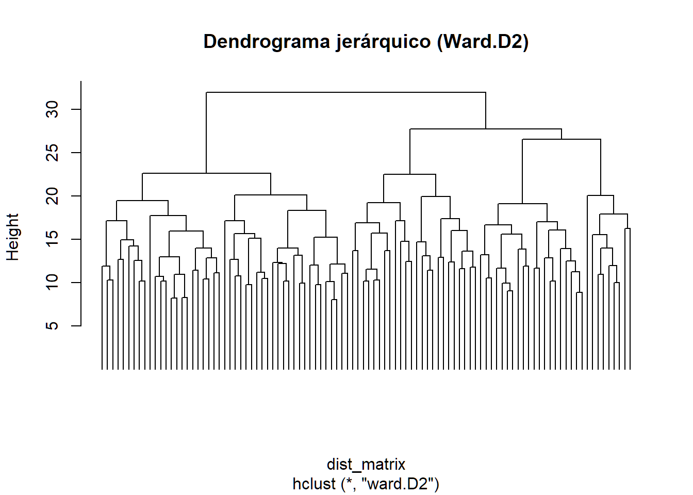
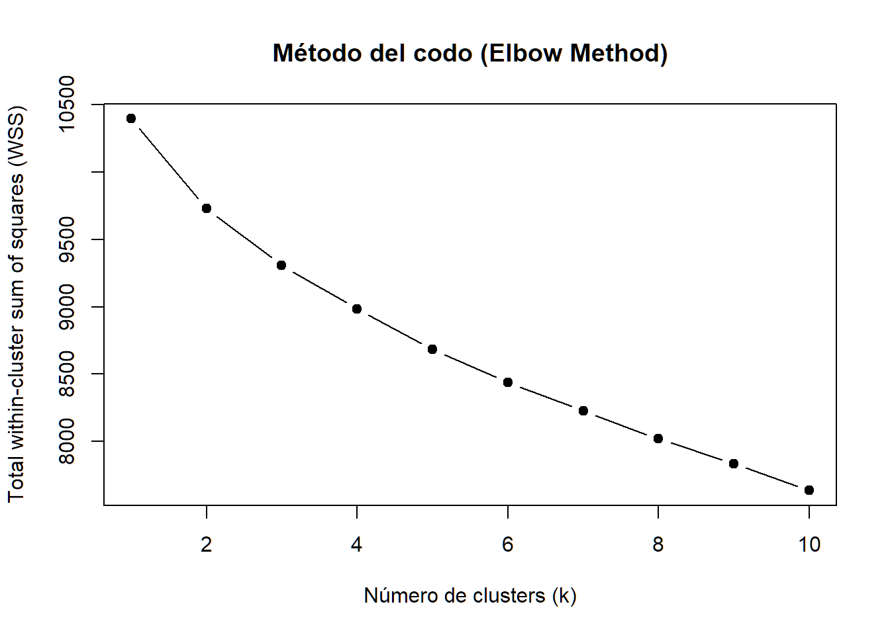
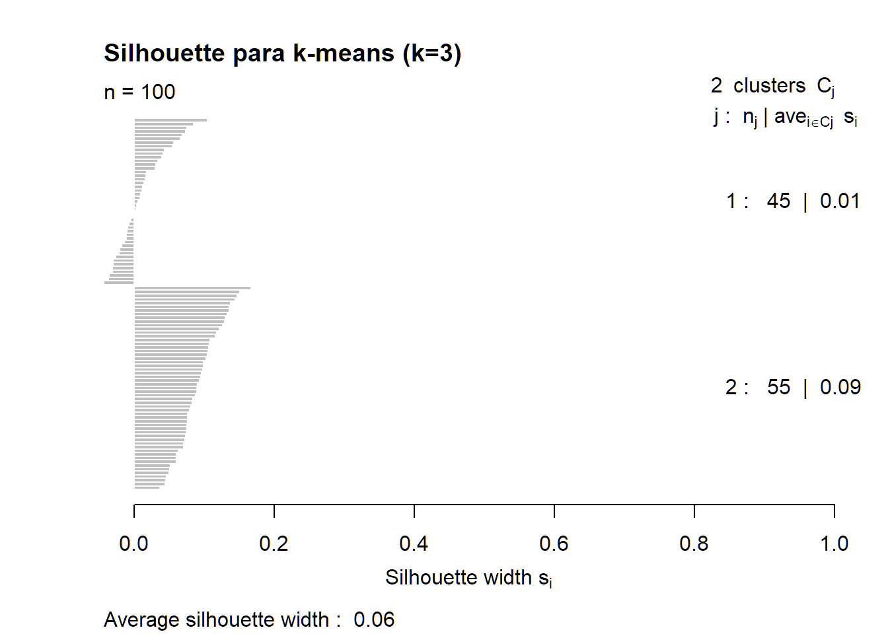
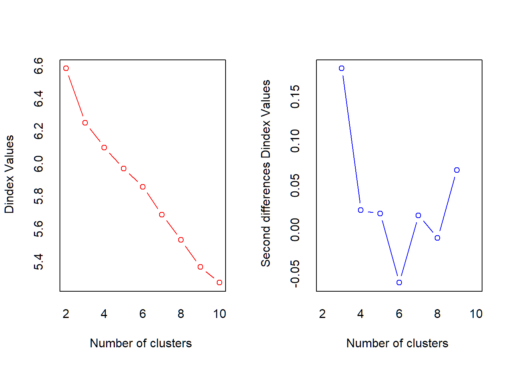
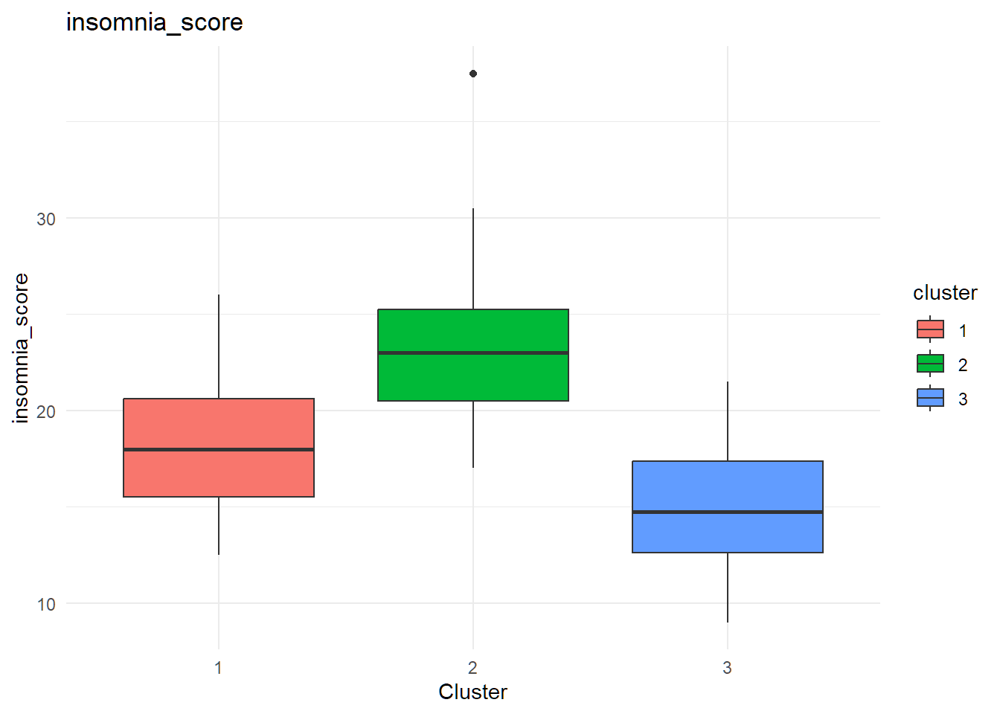
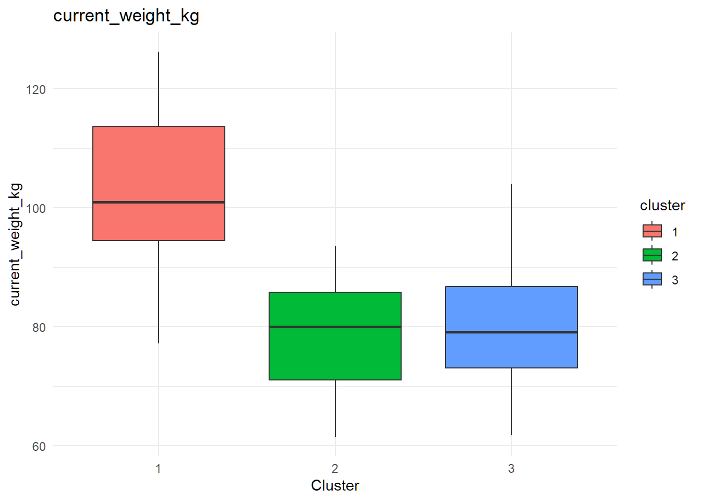
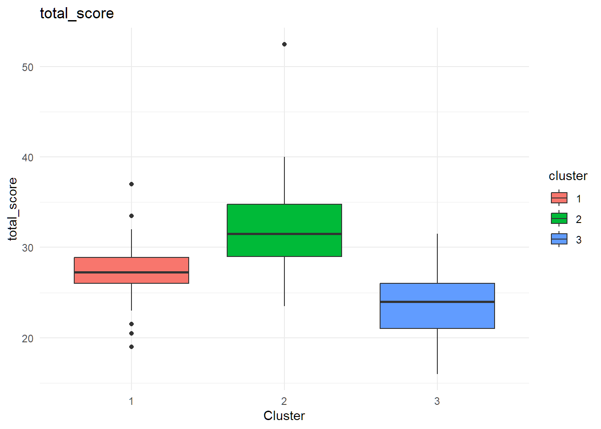
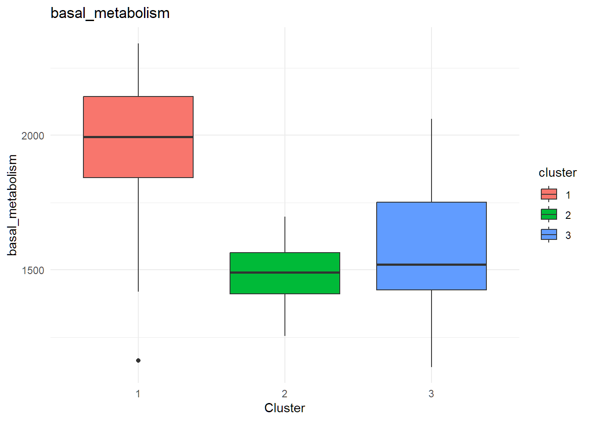
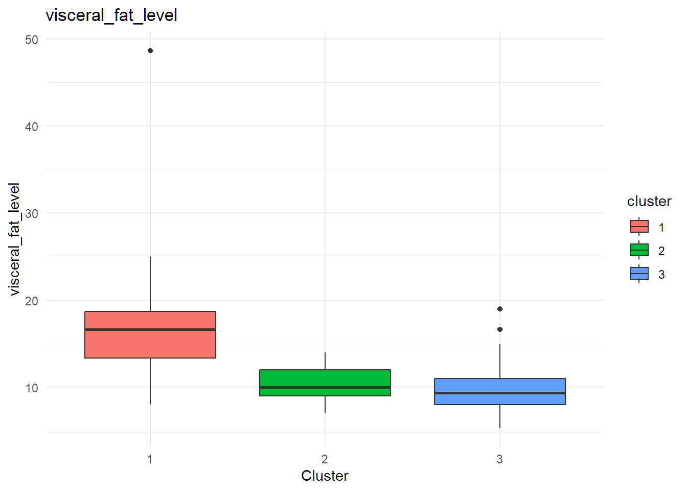

Where \(x_i, x_j\) are vectors of the variables of individuals \(i\) and \(j\).
10.3 Distance between clusters
In hierarchical clustering, the distance between clusters is defined according to a linkage method, such as:
Single linkage: minimum distance between elements of both clusters.
Complete linkage: maximum distance between elements of both clusters.
Average linkage: average of all pairwise distances.
Ward: minimizes the total variance within each cluster.
10.4 0. Data loading and creation of the Total object
Código
anthropometrics <-read_csv("data/AI4FoodDB/DS1_AnthropometricMeasurements/anthropometrics.csv")vital_signs <-read_csv("data/AI4FoodDB/DS6_VitalSigns/vital_signs.csv")lifestyle <-read_csv("data/AI4FoodDB/DS2_LifestyleHealth/lifestyle.csv")biomarkers <-read_csv("data/AI4FoodDB/DS4_Biomarkers/biomarkers.csv")OSQ <-read_csv("data/AI4FoodDB/DS8_SleepActivity/OviedoSleepQuestionnaire.csv")IPAQ <-read_csv("data/AI4FoodDB/DS7_PhysicalActivity/IPAQ.csv")Total <- anthropometrics %>%full_join(vital_signs, by =c("id", "visit")) %>%full_join(lifestyle, by =c("id")) %>%full_join(biomarkers, by =c("id", "visit")) %>%full_join(OSQ, by =c("id", "visit")) %>%full_join(IPAQ, by =c("id", "visit"))
Código
# 1️⃣ Función para limpiar valores "<x"clean_numeric <-function(x) { x <-trimws(x) # quitar espacios x <-ifelse(grepl("^<", x),as.numeric(sub("<", "", x)) /2, # reemplazar <x por x/2 x)suppressWarnings(as.numeric(x)) # convertir a numérico (NA si no se puede)}# 3️⃣ Detectar variables que deberían ser numéricas pero están como character# 4️⃣ Excluir las columnas de identificación# 3️⃣ Detectar columnas de texto que contienen números con "<"char_vars <-names(Total)[sapply(Total, is.character)]char_vars
hclust performs hierarchical clustering, merging individuals step by step according to Ward’s criterion, which minimizes the total within-cluster variance.
The dendrogram visualizes the merging process: the height of each merge indicates the distance between clusters.
Código
dist_matrix =dist(num_scaled, method ="euclidean")hc <-hclust(dist_matrix, method ="ward.D2")plot(hc, labels =FALSE, hang =-1, main ="Dendrograma jerárquico (Ward.D2)")

Código
k <-3clusters <-cutree(hc, k = k)table(clusters)
clusters
1 2 3
24 47 29
Código
plot(hc, labels =FALSE, hang =-1, main ="Dendrograma con rectángulos (k=3)")rect.hclust(hc, k = k, border ="red")
kmax =10wss <-numeric(kmax) # dentro de suma de cuadradosfor (k in1:kmax) {km <-kmeans(num_scaled, centers = k, nstart =25)wss[k] <- km$tot.withinss}plot(1:kmax, wss, type ="b", pch =19,xlab ="Número de clusters (k)",ylab ="Total within-cluster sum of squares (WSS)",main ="Método del codo (Elbow Method)")

10.8 K medias method
K-means is an unsupervised clustering algorithm widely used to partition a dataset into a predetermined number of groups, denoted by k. The method aims to assign each observation to one of the k clusters such that the within-cluster variation is minimized. More precisely, k-means minimizes the total within-cluster sum of squares, which measures how close the observations in each cluster are to the corresponding cluster centroid.
The algorithm proceeds iteratively in three main steps:
Initialization: Select k initial centroids, typically using random draws or algorithms such as k-means++.
Assignment step: Each observation is assigned to the nearest centroid according to a chosen distance metric, usually Euclidean distance.
Update step: New centroids are computed as the mean of all observations assigned to each cluster.
These two steps (assignment and update) are repeated until convergence, which occurs when cluster memberships no longer change or when the reduction in within-cluster variation becomes negligible.
Because the choice of k strongly influences the results, it is common practice to inspect different values of k and use diagnostic tools such as the elbow method or the silhouette coefficient to evaluate the quality of the clustering solution. K-means performs best when clusters are compact, roughly spherical, and have similar sizes, and when variables are properly scaled.
The silhouette index is a commonly used metric to evaluate the quality of a clustering solution. It measures how well each observation fits within its assigned cluster compared to other clusters.
For each observation i:
\(a(i)\): the average distance between observation i and all other points in the same cluster (within-cluster cohesion).
\(b(i)\): the smallest average distance between observation *i$ and all points in any other cluster (separation from the nearest alternative cluster).
The silhouette value for observation i is defined as:
The silhouette ranges from –1 to 1. Values close to 1 indicate that the observation is well matched to its cluster, values near 0 suggest overlapping clusters, and negative values indicate potential misclassification. The average silhouette index across all observations provides an overall measure of clustering quality and is commonly used to compare solutions with different numbers of clusters.
plot(sil_km, main ="Silhouette para k-means (k=3)")

10.10 Cluster profiling and statistical comparison
10.10.1 Determination of the number of clusters using NbClust
Selecting the optimal number of clusters is a critical step in cluster analysis. Different clustering validity criteria may provide different recommendations because they evaluate distinct aspects of cluster quality, such as compactness, separation, stability, or explained variance.
The NbClust package provides a comprehensive framework for determining the optimal number of clusters by simultaneously evaluating a large collection of clustering validity indices. For each candidate number of clusters (k), several criteria are computed and compared.
In this analysis, the first ten principal components obtained from PCA were used as input variables. Hierarchical clustering with complete linkage was applied and cluster solutions ranging from two to ten groups were evaluated.
*** : The Hubert index is a graphical method of determining the number of clusters.
In the plot of Hubert index, we seek a significant knee that corresponds to a
significant increase of the value of the measure i.e the significant peak in Hubert
index second differences plot.

*** : The D index is a graphical method of determining the number of clusters.
In the plot of D index, we seek a significant knee (the significant peak in Dindex
second differences plot) that corresponds to a significant increase of the value of
the measure.
*******************************************************************
* Among all indices:
* 13 proposed 2 as the best number of clusters
* 12 proposed 3 as the best number of clusters
* 2 proposed 9 as the best number of clusters
* 1 proposed 10 as the best number of clusters
***** Conclusion *****
* According to the majority rule, the best number of clusters is 2
*******************************************************************
Each validity index suggests an optimal number of clusters. NbClust then summarizes all recommendations and identifies the solution supported by the majority of criteria. This strategy reduces dependence on any single clustering metric and provides a more robust selection of the number of clusters.
10.10.2 Cluster assignment
The selected clustering solution was obtained using K-means.
top5 <- top_variables$variable[1:5]for(v in top5){ p <-ggplot( Total_mean,aes(x = cluster,y = .data[[v]],fill = cluster ) ) +geom_boxplot() +theme_minimal() +labs(title = v,x ="Cluster",y = v )print(p)}





10.17 Interpretation
Clusters should be interpreted according to the variables exhibiting the largest between-cluster differences and the smallest adjusted p-values.
Variables with large mean differences and significant ANOVA results can be considered key determinants of cluster membership and provide insight into the biological, anthropometric, metabolic, lifestyle, or sleep-related characteristics defining each subgroup.